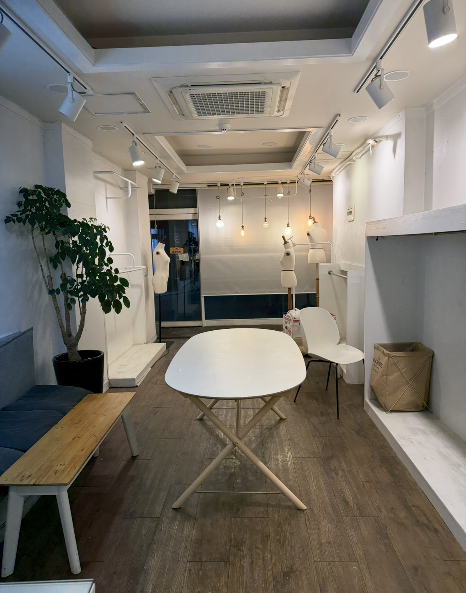

The studio
Flowmic is a ceramic place
We make dishes, bottles, cups, and crafts for daily use — objects that should feel good in the hand and honest on the table.
Nothing here is cast from a mold. Clay is centered, opened, pulled, trimmed, and fired. A rim may wander. A glaze may pool. That is how you know a person stood at the wheel.
손으로 만든 그릇 — vessels made by hand.
